1. QGIS Installation for MS Windows, MacOS and Ubuntu Linux
This is a walkthrough on the installation of QGIS on various operating systems.
Note
The installers for Windows and Mac are available as download links. The version used for this training is QGIS 3.40.o ‘Bratislava’ Long Term Release (LTR). If you need installers for other operating systems other than what is provided below, please refer to QGIS download page.
{kind=link}
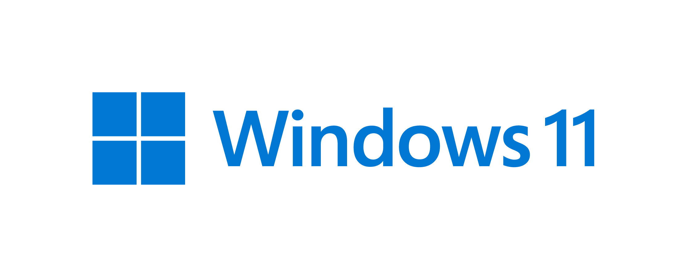
1.1. Microsoft Windows
Note
The screen-shots provided here illustrate the installation process under Windows 11 Pro. It is assumed that you have administrative privileges in your system. The process is similar to other versions of Windows. However, there maybe occasions that you will be prompted to provide administrative account details. To run the installer as administrator, right-click the installer and choose Run as Administrator .
The installers are available in offline and online mode for this module.
QGIS 3.40. Offline Installer
QGIS 3.40. Online Installer
Locate the downloaded installer from your file explorer and double-click it to install. Click Next.
{kind=link}
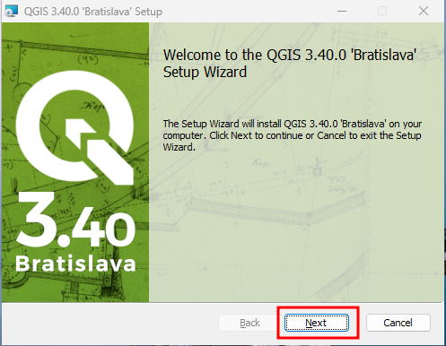
Accept the License Agreement by clicking I Agree.
{kind=link}
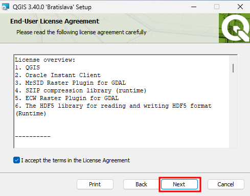
4. You can choose where to install QGIS in your system by selecting the appropriate directory using the Browse button. We accept the default for now by hitting Next.
{kind=link}
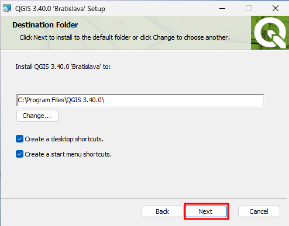
Clicking the Install button will trigger the main process of installation. The windows may dim and ask permission. Be sure to have administrative rights for it to continue.
{kind=link}
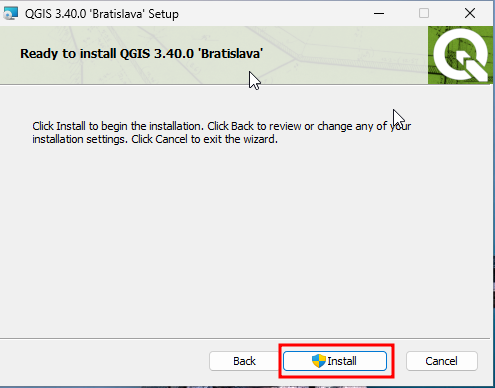
Installation will take a couple of minutes depending on your hardware specs.
{kind=link}
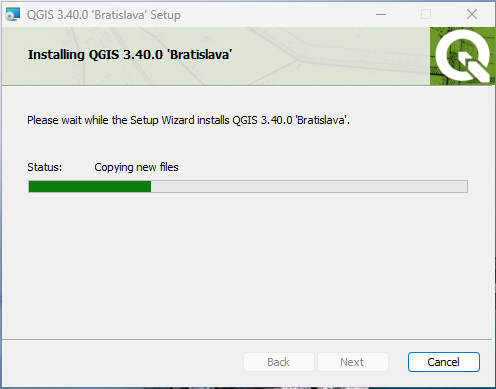
Click Finish to complete your install process.
{kind=link}
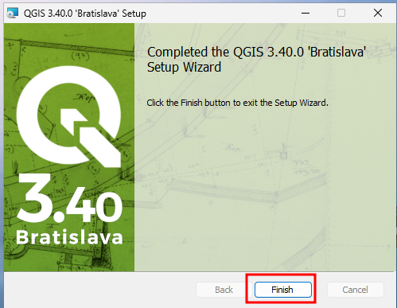
You can now start QGIS by clicking QGIS Desktop icon or launching it from the Start Menu.
{kind=link}
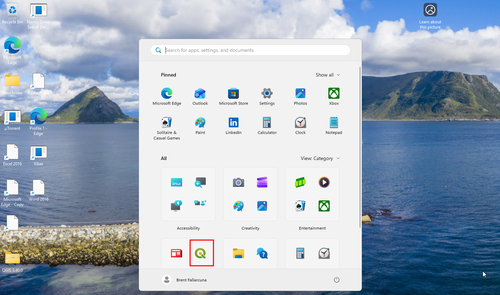
8. To uninstall QGIS, simply go to Control Panel –> All Control Panel Items –> Programs and Features, right click .
{kind=link}
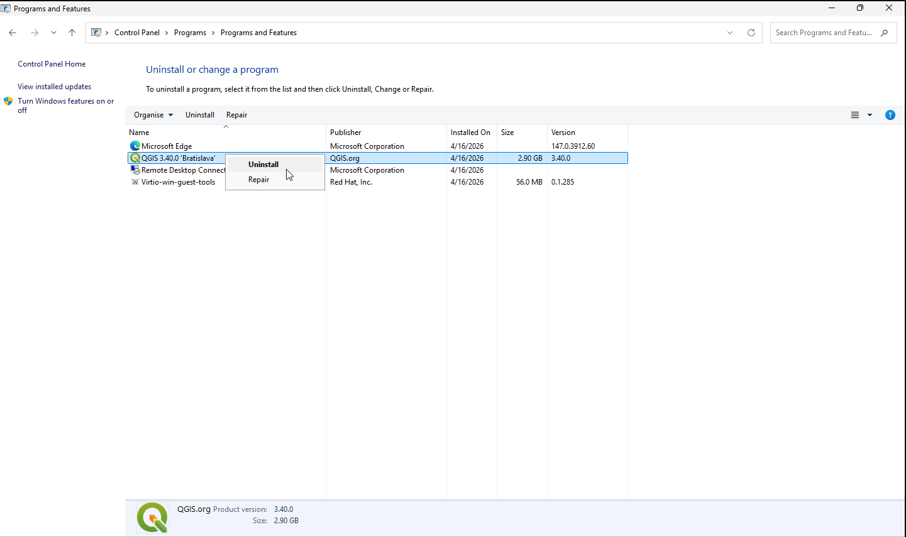
For additional reference, here is a youtube video for installing QGIS in Windows. For offline version of the video kindly click this link.
{kind=link}
1.2. Mac OSX
The links below are installers for MacOS which are in .dmg (Disk Image) format.
Note
Please visit the QGIS download page for Mac as there things to consider for the program’s first launch.
2. Install all the required frameworks by double-clicking the
.dmg files.
3. To install QGIS, double-click the downloaded “.dmg”. A new finder window will open QGIS 3.4.
{kind=link}
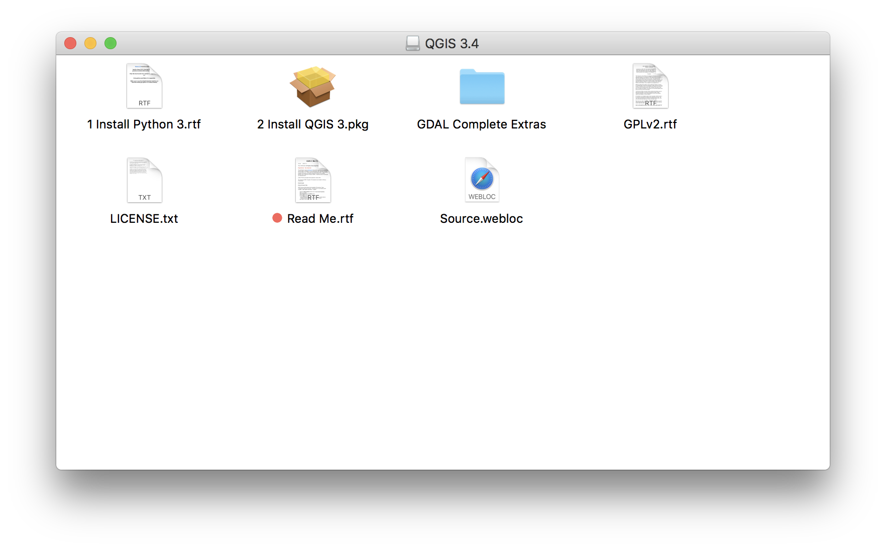
Before installing the 3. Install QGIS 3.pkg, install first Python 3.6 (see Install python 3.rtf), followed by 2 Install GDAL complete.pkg and finally, 3 Install QGIS 3.pkg. Note that all these should be installed in order.
4. Launch QGIS by double-clicking the QGIS from your Applications directory
5. To remove QGIS, drag the QGIS from your Applications directory to the Trash icon in your Dock
{kind=link}
1.3. GNU/Linux Ubuntu
Warning
Command line instructions are outlined from hereon. It is assumed you know basic command line interface (CLI) and you have administrative privilege to install applications in your Ubuntu Linux machine. Depending on your Ubuntu version, installation may vary. The instructions below are for Linux Mint 17.3 “Rosa” version.
1. Update your Ubuntu machine. Open Terminal and update all security updates:
sudo apt-get update
sudo apt-get upgrade
2. Install QGIS using UbuntuGIS repository. Open Terminal and edit your repository list:
sudo nano /etc/apt/sources.list
3. Add the UbuntuGIS repository (replace the xenial to your distribution version):
deb http://qgis.org/debian xenial main
deb-src http://qgis.org/debian xenial main
4. Add PPA key to your system so Ubuntu can verify the packages from the PPA:
sudo apt-key adv --keyserver keyserver.ubuntu.com --recv-key CAEB3DC3BDF7FB45
This will now pull down the PPA’s key and add it to your system.
5. Install QGIS:
sudo apt-get update
sudo apt-get install qgis qgis-common python-qgis
Start QGIS by clicking the QGIS button from the Ubuntu desktop.
{kind=link}
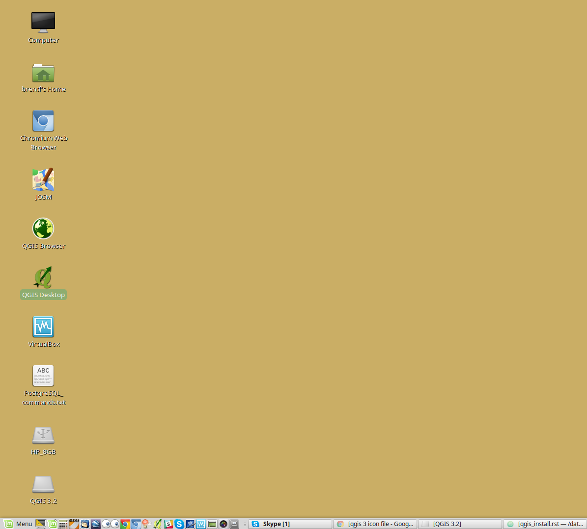
7. To remove QGIS, open Terminal and remove the qgis application by typing:
sudo apt-get remove qgis